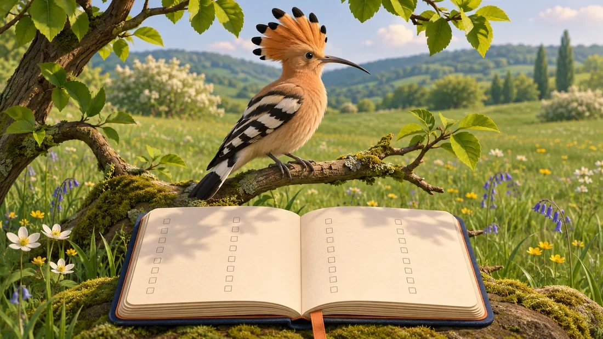

AI-genererad redaktionell illustration. Månen står kvar. Fotografen kan välja avståndet till huset. AI-illustration.Om bilden
En tänkt gård och en avsiktligt överdriven måne sätter fotografens position i centrum. När kameran kommer längre från huset blir huset mindre i förhållande till månen; ett längre objektiv kan sedan rama in motivet tätare. Bilden visar varken hur stor månen faktiskt såg ut eller när den gick upp på en viss plats.
Fördjupning. Månen hänger över ett hus och ser bredare ut än hela taket. Är det supermånen, teleobjektivet eller fotografens placering som gör bilden möjlig? Den viktigaste frågan är var fotografen stod.
I dag, den 24 november, är månen full omkring kl. 15.54 svensk tid enligt NASA:s tabell. Fullmånen infaller nära den del av månbanan där månen är som närmast jorden. Därför upptar den mer plats på himlen än en fullmåne som befinner sig långt bort i sin bana. Men den skillnaden förklarar inte på egen hand varför månen i vissa bilder ser ut att sluka ett helt hus. Klockslaget för fullmånen är dessutom inte detsamma som den lokala månuppgången.
Backa först, zooma sedan
Ställ kameran på ett stativ så att både ett tak och månen syns. Om du zoomar in utan att flytta stativet växer både taket och månen i bilden. Förhållandet mellan deras bredder ändras i praktiken inte. En beskärning gör i det avseendet ungefär samma sak: du tar med mindre av omgivningen, men föremålen i den gemensamma delen behåller sina storleksförhållanden.
Backa i stället bort från huset längs samma siktlinje. Avståndet till huset ökar märkbart; avståndet till månen ändras försumbart. Huset blir därför mindre i förhållande till månen. Med ett längre objektiv kan du sedan fylla bildrutan igen. Objektivet gör den nya kompositionen möjlig. Det var förflyttningen som ändrade perspektivet.
En tredje effekt sitter hos betraktaren
Månen kan dessutom se större ut med blotta ögat nära horisonten. Det kallas månillusionen och är inte samma sak som att månen är närmare jorden. NASA visar ett enkelt jämförelseprov: fotografera månen lågt och sedan högt samma kväll med samma inställningar och jämför skivans bredd i pixlar. Den horisontella bredden är ungefär densamma; atmosfärisk brytning kan däremot platta till den låga månen på höjden.
Om himlen är klar kan du testa perspektivet med en byggnad på avstånd. Eller prova samma princip inomhus med en kaffekopp framför en väggklocka. Zooma först från samma plats. Backa sedan och komponera om. Titta på vad som händer med storleksförhållandet mellan de två motiven.
· Klimat och miljö
När skogsvägen blir en vattenväg
AI-genererad redaktionell illustration. Under grusvägen måste bäcken få plats även när flödet stiger. AI-illustration.Om bilden
Här rinner bäcken genom en öppen trumma vid lugnt flöde. Den lilla öppningen under hela vägbanken visar varför en trumma som inte räcker till, eller är blockerad, kan bromsa flödet och få vatten att samlas på uppströmssidan. Bilden visar en tänkt plats och är varken dokumentär eller en konstruktionsritning.
Fördjupning. En grusväg genom skogen är ritad för att leda människor och virke. I ett skyfall kan den också leda vatten. Då räcker det inte att fråga om själva vägen håller. Minst lika viktigt är vart vattnet tar vägen när det lämnar den.
Den 24 november har Skogsstyrelsen aviserat en konferens om hur skogen kan anpassas till ett förändrat klimat. En strategi för skogsbilvägar står bland de aviserade frågorna. Det är en bra anledning att uppmärksamma en detalj som är lätt att köra över utan att tänka på den: vägtrumman, röret som låter en bäck eller annat vatten passera under vägen. Enligt programmet är starten kl. 10. Det här är en fördjupning om programfrågan, inte en rapport om vad deltagarna har kommit fram till.
Vattnet följer inte fastighetsgränsen
Tänk dig en väg som löper nedför en skogssluttning. Vid kraftigt regn kan vägbanan och diket samla vatten från marken runtomkring och leda det vidare. Om vattnet dessutom kommer till en passage under vägen som inte räcker till kan det stiga, rinna över vägbanan eller ta en annan väg. När vatten samlas till ett kraftigare flöde kan det föra med sig jord och grus. Det som börjar i ett skogsdike kan därför få följder för en allmän väg längre ned.
Det är inte bara ett tankeexempel. Efter skyfallen i Västernorrland i september 2025 gick Skogsstyrelsen igenom ett urval av Trafikverkets skadepunkter och de områden som avvattnades mot dem. Vid flera skadepunkter anslöt en skogsbilväg till den allmänna vägen eller ledde vatten mot Trafikverkets vägdike. Analysen visar varför skogsvägar är värda att undersöka. Den kan däremot inte tala om exakt hur stor del av skadorna som berodde på dem, vare sig vid varje punkt eller i länet som helhet.
Samma passage för vatten och fisk
I sin plan för 2026–2030 föreslår Skogsstyrelsen bland annat fler trummor där det behövs och byte av feldimensionerade trummor. Passagerna ska tåla höga flöden utan att hindra fiskvandring. Det senare är en egen fråga: vatten kan passera genom ett rör som ändå blir ett hinder för fisk, till exempel om utloppet ligger för högt.
Det avgörande är alltså inte bara hur grovt röret är. Man behöver se var vattnet samlas, var det kan passera och vad som ligger nedströms. Det är där skogsvägens osynliga uppgift blir synlig: ett beslut om en väg är också ett beslut om hur den delen av landskapet avvattnas.
23 november 2026
· Fåglar och naturvård
Vad listan utan härfågel kan berätta

AI-genererad redaktionell illustration. Den ovanliga fågeln får sammanhang av alla listor där den saknas. · AI-illustration Om bilden. Härfågeln och anteckningsboken står för själva fyndet respektive de kompletta listorna runt omkring det. Illustrationen visar ingen verklig fyndplats och ingen faktisk observation.
Fördjupning.
En härfågel på en irländsk udde är värd att rapportera. Men för den som vill veta hur ofta skådarna stötte på arten är även listan från den som gick en fågelrunda utan att hitta någon viktig. British Trust for Ornithology jämför sådana kompletta artlistor i BirdTracks första årsrapport, publicerad 2026 och baserad på observationer från 2025.
Första veckan i april 2025 fanns härfågeln på 5,6 procent av de kompletta BirdTrack-listorna från republiken Irland. I grevskapet Cork, som ingår i rikssiffran, var andelen 45 procent. Det är andelar av inskickade listor, inte av alla fåglar eller av landskapet. Samma fågel kan ha rapporterats av flera, och skådare kan välja att besöka en plats just för att arten setts där.
En komplett lista betyder att skådaren rapporterar alla arter som upptäckts och kunnat identifieras under besöket, inte att skådaren har sett allt som fanns där. Listorna utan härfågel ger ändå något som lösryckta fynd saknar: ett antal besök att sätta träffarna i relation till.
När BirdTrack uppskattar starten på den huvudsakliga vårankomsten använder forskarna också kompletta listor. De tar hänsyn till besökets längd och antal arter på listan. Sedan letar de efter när den utjämnade rapporteringskurvan når en tiondel av sin vårnivås topp. Det betyder inte att en tiondel av fåglarna har kommit. Det är ett jämförbart mått på när arten börjar dyka upp regelbundet i rapporterna.
Källor och källvärdering
Jordan m.fl., The BirdTrack Report 2025, BTO Research Report 823, 2026, särskilt s. 8–9 och 17. Primär rapport från projektet själv. Den visar härfågelandelarna och beskriver hur ankomster uppskattas från kompletta listor. Observationerna är frivilligt insamlade och inte ett slumpmässigt urval av platser och fåglar. Starkt underlag för vad listorna visade, inte ett oberoende populationsmått.
BTO:s vägledning om rapporteringsgrad. Projektägarens egen förklaring av nämnaren. Metodstöd, inte en oberoende kontroll av de irländska resultaten.
· Fåglar och naturvård
Ugglans sista måltid ger en ledtråd om dagsljus
AI-genererad redaktionell illustration. En bit insektsvinge kan hjälpa forskarna att läsa en ugglas vardag. · AI-illustration Om bilden. Förstoringsglaset ger vingfragmentet huvudrollen. Det syftar på fossilfyndets verkliga ledtråd; bilden visar inget äkta fossil och rekonstruerar inte ugglans utseende eller jakt.
Fördjupning.
I magtrakten på ett cirka 47 miljoner år gammalt ugglefossil från Messel i Tyskland har forskare hittat rester av en kackerlacka. Det intressanta är inte bara vad ugglan åt. En bit av kackerlackans vinge skimrar blågrönt, och hos nutida kackerlackor är sådant skimmer förknippat med dagaktivitet. Tillsammans med ugglans bevarade fjädrar och vingben talar det för att den lilla fågeln kan ha jagat i dagsljus.
Fyndet, publicerat online i Current Biology den 2 november 2026, ger forskarna något ovanligt att gå på. De flesta ugglefossil består av enstaka ben. Från Messel finns här både avtryck av flygfjädrar och rester av en sista måltid. I de bevarade handpennorna, de yttre flygfjädrarna, såg forskarna inte den fransiga framkant som hos många nattaktiva ugglor bidrar till tystare flykt. Fossilets överarmsben var också kraftigare än hos nu levande ugglor, ytterligare ett tecken forskarna använder för att resonera om flykten.
En dagaktiv insekt kan förstås bli uppäten efter mörkrets inbrott. Forskarna har varken sett jakten eller klockslaget; det intressanta är att måltiden och vingarnas form pekar åt samma håll. Fyndet hjälper till att ringa in hur nattaktivitet utvecklades, men säger inte när den började eller hur andra tidiga ugglor levde.
Källor och källvärdering
Mayr m.fl., Current Biology, online 2 november, tidskriftsnummer 16 november 2026. Studieförfattarnas primärkälla för maginnehåll, jämförelser med nu levande arter, primärfjädrarnas framkant och överarmsbenets form. Direkta observationer på fossil stöder beskrivningen; beteendet är en tolkning byggd på jämförelser, inte en direkt observation. Underlaget avser detta exemplar.
Senckenberg, forskningsmeddelande 3 november 2026. Forskarinstitutionen beskriver fyndplats, datering, bevarandet och vingfragmentets skimmer. Nära själva undersökningen, men samma forskning, inte oberoende bekräftelse.
· Skola och lärande
Att kunna granska ett AI-svar hör till det elever behöver lära sig
AI-genererad redaktionell illustration. Eleven kan pröva artnamnet från skärmen mot de drag som går att se i en flora. Om bilden. AI-genererad redaktionell illustration. Datorns skärm och den uppslagna floran gestaltar ett exempel på källkontroll. Bilden visar en tänkt lektion.
Daterad fördjupning.
Hur vet en elev om ett svar från en AI-tjänst går att lita på? När regeringen på måndagseftermiddagen sammanfattade EU:s utbildningsministermöte lyfte den stödet till lärare och skolor. Ministrarna hade mötts torsdagen den 19 november. I slutsatserna räknar de förmågan att kontrollera ett AI-svar som en färdighet i sig.
Tänk dig att en elev frågar vilken art ett löv kommer från. AI-tjänsten ger ett artnamn. Eleven kan jämföra bladkanten och nerverna med bilder i en flora och sedan förklara vilka drag som stämmer. Det är ett tänkbart exempel på den källkontroll som rådet beskriver. Eleven behöver också kunna avgöra när det är bättre att använda floran direkt.
Regeringen skriver att varje land bör avgöra hur AI används i utbildningen, med stöd i forskning och beprövad erfarenhet. Rådets slutsatser anger en gemensam inriktning. För en svensk lärare följer inget krav att använda en viss AI-tjänst i nästa lektion.
Vid samma möte tog ministrarna också upp hur fler elever kan få upp ögonen för naturvetenskap, teknik, ingenjörsvetenskap och matematik. De uppmanar länderna att stärka studie- och yrkesvägledningen och att särskilt uppmärksamma flickors och kvinnors möjligheter att delta.
Källor och källvärdering
Regeringens redogörelse den 23 november. Utbildningsdepartementet återger mötet den 19 november och den svenska regeringens hållning. Sidans inbyggda publiceringstid är 23 november kl. 15.00.54 svensk tid.
EU-rådets slutsatser om AI, 15402/26. Den antagna texten är daterad 19 november. Punkterna 10 och 11 beskriver kritisk bedömning, kontroll av genererade svar och förmågan att avgöra när AI bör lämnas åt sidan. Lövövningen är redaktionens eget exempel.
EU-rådets slutsatser om STEM, 15010/26. Rådets antagna text beskriver intresse, deltagande och studie- och yrkesvägledning. Den redovisar mål för fortsatt arbete. Klassrumseffekter har inte utvärderats i dokumentet.
· Fåglar och naturvård
Vad nattens fågeleko säger om morgonen
AI-genererad redaktionell illustration. Nattens eko kan ge en ledtråd om morgonens fångst. · AI-illustration Om bilden. Radar och ringmärkare delar ett bildrum från natt till gryning för att visa hur två mätningar kompletterar varandra. Det är en metafor för ett statistiskt samband, inte en dokumentär bild av stationen eller en spårning av enskilda fåglar.
Fördjupning.
När flyttfåglar drar fram i mörkret syns de knappt från marken. Men de ger eko på samma typ av radar som meteorologer använder för att följa nederbörd. I en studie i novembernumret av Ecology använde forskare ekon från två radarstationer för att uppskatta hur många fåglar en ringmärkningsstation på Appledore Island utanför Maine skulle fånga nästa dag. En mätning i luften över en hel region kan alltså förbättra prognosen för en enskild station på marken.
Forskarna jämförde modeller med och utan radardata, med ett helt års observationer undanhållna i taget för att pröva prognosen mot år som modellen inte hade tränats på. När de lade till radardata förbättrades sannolikhetsprognosen för nästa dags fångst under 18 av 23 vårar och 21 av 26 höstar. Ringmärkningsmaterialet sträckte sig över åren 1996–2023.
Radarn ger ett mått på flyttaktiviteten över en region. Ringmärkarna fångar ett urval av de fåglar som rör sig nära näten. Prognosen gäller fångst vid just den här stationen, inte alla fåglar som landade eller vilken art ett enskilt eko kom från.
Flyttdata kan hjälpa naturvårdare att avgöra vilka nätter det gör mest nytta att släcka onödig belysning. Men studien prövade om radar kunde förutsäga fångsten på en ö, inte om en viss släckning skyddade fåglar eller om modellen fungerar på andra platser. Det är nästa sorts fråga att testa.
Källor och källvärdering
Burt m.fl., Ecology 107(11), e70565, november 2026. Primärstudien. Sammanfattningen och figur 2 anger period, geografiskt urval, jämförelse, årskorsvalidering och radarbidrag. Starkast källa för huvudresultatet; historiskt test från en station, inte ett försök med belysning eller en prospektiv driftutvärdering.
BirdCast, metodfrågor. Aktörens egen metodbeskrivning för en separat löpande radartjänst. Förklarar varför nederbörd måste filtreras och varför enskilda arter inte kan bestämmas ur dessa radarekon utan kompletterande data. Stödjer metodförklaringen, inte en oberoende replikation av Appledore-resultatet. Metodtexten är inte en nyhet i slotens halvtimme.
· Fåglar och naturvård
När grågässen lyfter är problemet inte löst
AI-genererad redaktionell illustration. En tom åker säger inget om var gässen landar. Om bilden. AI-genererad redaktionell illustration. De två fälten gör omflyttningens dilemma synligt. Bilden visar varken en verklig plats, ett försök eller att gässen alltid skulle välja stubben.
Fördjupning. Bygger på svenska fältstudier från 2022 och 2024, inte på en ny händelse i dag.
När grågässen lyfter från en åker kan den se fredad ut. Men i ett svenskt fältförsök var det främst en paus. Forskarna följde GPS-märkta grågäss i södra Mellansverige. De första fyra timmarna efter att fåglarna skrämts använde de våtmarker mer och åkrar mindre. Efter ett dygn gick det inte längre att påvisa någon skillnad i användningen av jordbruksmark mellan skrämda och ostörda gäss. Månsson med flera, 15 oktober 2024.
Från en enskild åker är det lätt att se att flocken försvinner. På landskapsnivå är frågan vart den tar vägen. Forskarna följde fåglarnas positioner, inte hur stor skörd lantbrukarna fick. Det de såg motiverar därför en närmare titt på vilka åkrar som erbjuder ett alternativ, inte slutsatsen att någon viss metod sparar en viss mängd gröda.
Runt Sörfjärden i Södermanland räknade en annan studie grågäss på flera slags åkrar. Ett fält där gässen fick beta ostört, en så kallad avledningsåker, användes mer än andra fält på våren och sommaren, men inte på hösten. Överlag var chansen att se betande grågäss högre på fält närmare deras övernattningsplats. En gräsåker som fungerar på våren är alltså inte självklart bästa alternativet på hösten. Då är stubb med spillsäd en möjlighet, men den behöver prövas på plats. Teräväinen med flera, 20 september 2022, fulltext via Norges nationella forskningsarkiv · Studiepost hos Högskolan Kristianstad.
Källor och källvärdering
Månsson med flera jämför registrerade GPS-positioner efter en lokal störning med samma märkta fåglars positioner vid ett tidigare, ostört jämförelsetillfälle. Det ger god grund för ett tidsbegränsat beteenderesultat, inte ett mått på skördeskada. Teräväinen med flera räknar fåglar kring en enskild sjö och modellerar sambandet med plats, tid och gröda. Det säger något om just det landskapet, men prövar inte generella avledningsåkrar eller minskad skördeskada. Studierna kompletterar varandra men överlappar i forskargrupp och är inte oberoende upprepningar av samma försök.
· Vetenskap
Samma demensdiagnos, olika takt på minnestestet
AI-genererad redaktionell illustration. Två buntar med olikfärgade flikar illustrerar de två grupper som forskarna jämförde. Om bilden. Pappersbuntarna är en AI-genererad illustration. Bladen innehåller inga verkliga patientuppgifter. Buntarnas storlek anger inte antalet deltagare.
Klockan 13.32 den 23 november berättade Karolinska Institutet om en svensk studie av Lewykroppsdemens. Alla 360 deltagare hade fått samma demensdiagnos. Hos drygt hälften visade prov från ryggvätskan också förändringar som är typiska för Alzheimers sjukdom. När forskarna följde deltagarnas resultat på ett kognitivt test över tid sjönk poängen snabbare i den gruppen.
Forskarna gick tillbaka till uppgifter om personer som hade fått sin diagnos i Sverige mellan 2010 och 2020. De kopplade svaren från ryggvätskeproven till upprepade testresultat. Testet, som kallas MMSE, ger högst 30 poäng. Forskarna kunde därför jämföra hur resultaten förändrades från ett besök till nästa.
Av de 360 deltagarna hade 196 provsvar med tecken på alzheimerförändringar. Deras testresultat sjönk i genomsnitt 0,8 poäng mer per år än resultaten i gruppen utan sådana tecken. Skillnaden gäller genomsnitten för de två grupperna. Den räcker inte för att säga hur snabbt en viss persons förmåga kommer att förändras.
För den som undrar varför människor med samma diagnos kan ha olika sjukdomsförlopp ger studien en ledtråd. Biologiska skillnader som syns i ett prov hängde här samman med hur testresultaten utvecklades. Forskarna följde vård som redan hade ägt rum. Undersökningen avgör varken vad som orsakade gruppskillnaden eller vilken behandling en enskild person bör få.
Källor och källvärdering
Karolinska Institutets forskningsnyhet visar när resultaten presenterades på svenska. Författarnas studie publicerades i tidskriften Alzheimer’s & Dementia den 20 november. Den beskriver deltagarna, mätningarna och hur skillnaden mellan grupperna beräknades. Institutets nyhet och forskningsartikeln handlar om samma undersökning.
· Fåglar och naturvård
Fåglarna stannar inte vid våtmarkens kant
AI-genererad redaktionell illustration. När vattnet drar sig undan får landskapet en ny väg för fåglarna. Om bilden. Den lugna dammen och den blottade lerbottnen ställs sida vid sida för att visa två miljöer som kan ingå i samma fågels vardag. AI-genererad illustration, inte en karta, mätbild eller avbildning av den faktiska lokalen.
Fördjupning om en studie publicerad den 15 november.
När tidvattnet sjunker vid Yangtzeflodens mynning blir stora lerbottnar tillgängliga. De satellitmärkta måsarna i en ny studie använde tidvattenslätterna oftare vid lågvatten. De höll ändå oftast till i våtmarken som naturvårdare hade restaurerat intill. Forskare som följde sammanlagt 92 vattenfåglar vid Chongming Dongtan fick på så vis syn på något som en räkning inne i den nya våtmarken lätt missar: fåglarna använder flera sorters mark runt den. Liu med flera, originalstudien
Forskarna följde skärfläckor, styltlöpare och en östasiatisk måsart, Saundersilarus saundersi, under häckningsperioder 2021, 2023 och 2024. För var och en av de tre arterna låg de flesta registrerade positionerna i den restaurerade våtmarken. Drygt en tredjedel av måsarnas positioner låg däremot på tidvattenslätterna. Styltlöparna hade också många positioner på jordbruksmark. Det är andelar av registrerade positioner, inte andelar av alla fåglar i området.
Måsarnas koppling till tidvattnet syntes även när forskarna bara använde positioner med minst sex timmars mellanrum, för att minska beroendet mellan observationer av samma fågel. Spårningen berättar var de märkta fåglarna höll till. Den berättar inte vad de åt där eller hur många ungar som överlevde. En tidigare studie från samma forskargrupp fann en låg andel lyckade bon hos de tre arterna. Att fåglar använder en våtmark och att deras bon lyckas är två olika resultat, med två olika sätt att undersöka dem.
Den praktiska lärdomen är att inte utvärdera en restaurering bara innanför den ritade gränsen. Vid Chongming Dongtan gav spårningen skäl att titta även på tidvattenslätterna och jordbruksmarken runtomkring. Vid andra våtmarker kan det vara andra miljöer som fyller den rollen.
Källor och källvärdering
Liu med flera mätte positioner på kända individer, kopplade positionerna till miljötyper och kontrollerade tidvattensambandet även med glesare positioner. Metoden belägger platsanvändning hos de märkta fåglarna, inte matval, häckningsframgång eller en orsakad förändring jämfört med tiden före restaureringen. Bostudien använde en annan metod för ett annat mått på samma plats. Den är stöd för skillnaden mellan måtten, inte en oberoende upprepning av spårningen.
· Fåglar och naturvård
När glaset ser ut som fri väg
AI-genererad redaktionell illustration. För fågeln kan reflexen se ut som en väg. Ett mönster på utsidan hjälper den att se rutan. Om bilden. De två delarna av den fiktiva glasfasaden gestaltar skillnaden mellan en trädspegling och en markering på glasets yta. AI-genererad illustration, inte en bild från Yale eller ett diagram över resultatet.
Daterad fördjupning. Studien publicerades den 13 november.
En glasruta kan se ut som himmel eller som ett träd på andra sidan gården. Det gör den svår för en fågel att upptäcka i tid. Vid Yaleuniversitetet i New Haven i USA kartlade forskare var fåglar flög in i rutor. När de tre hårdast drabbade byggnaderna fick mönstrad fönsterfilm registrerades färre kollisioner där. Originalstudiens sammanfattning
Forskarna gjorde återkommande sökningar vid 55 byggnader under fyra flyttperioder mellan 2022 och 2024 och lade samman fynden med andra rapporter. I hela underlaget fanns 3 160 registrerade kollisioner för 117 arter. Det är inte ett årstal, inte bara dödsfall och inte antalet kollisioner på de tre byggnader som fick film. Poängen med kartläggningen var att se vilka glasytor som stod för många träffar och sätta in åtgärden där. Yales kollisionskarta
Mönstret hjälper genom att göra rutan synlig som en yta, inte en öppning. Den amerikanska naturvårdsmyndigheten rekommenderar tätt upprepade markeringar på utsidan, med högst ungefär fem centimeter mellan markeringarna, snarare än en ensam rovfågelsilhuett. På utsidan syns markeringarna mot reflexen och hjälper fågeln att uppfatta glaset. U.S. Fish & Wildlife Service
Försöket i New Haven ger inte ett procenttal att lova för alla glasfasader. De tre byggnaderna valdes just för att de haft många kollisioner, och det öppet läsbara sammandraget ger ingen exakt storlek på minskningen. Men det ger ett sätt att börja: leta efter mönstret i var fåglar träffar glaset, markera de värsta rutorna och följ upp om färre fåglar kolliderar där.
Källor och källvärdering
Originalstudiens offentliga sammandrag belägger kartläggning, omfattning och färre kollisioner efter behandling på tre platser. Det är ett lokalt före–efter-resultat, inte ett mått på universell effekt. Yales karta kommer från samma arbete och är inte oberoende belägg. Naturvårdsmyndighetens råd stöder åtgärdens praktiska utformning, inte Yaleförsökets effektstorlek.
· Skola och lärande
Vilket försök saknas i den fjärde rutan?
AI-genererad redaktionell illustration. Huvudet och blicken kan vara vända åt olika håll. Om bilden. En svartkråka står i gräset när en människa går förbi med sänkt huvud. Den AI-genererade bilden illustrerar situationen. Försökslägena och resultaten återges i texten.
En övning för klassrummet, byggd på en studie publicerad den 20 november 2026.
Går det att avgöra om en kråka reagerar på vart vi tittar eller på hur vi håller huvudet? Pröva det med fyra rutor på ett papper. En person läser upp försöken, en annan fyller i rutorna. Uppgiften är att hitta en jämförelse där bara en sak ändras.
Rita en tabell med två rader och två kolumner. Skriv Huvudet mot fågeln och Huvudet nedåt vid raderna. Skriv Blicken mot fågeln och Blicken nedåt över kolumnerna.
I ett försök nära Portsmouth i England gick en människa förbi svartkråkor som letade mat. Försök A hade huvudet och blicken mot kråkan. I B var huvudet också vänt mot kråkan, men blicken var sänkt. I C var både huvudet och blicken sänkta. Forskarna mätte avståndet när fågeln lyfte. Placera A, B och C i tabellen. Vilken ruta blev tom? Vilka två försök ska ni jämföra om ni vill undersöka blicken medan huvudet hålls likadant?
Facit. Rutan med huvudet nedåt och blicken mot fågeln är tom. A och B ger jämförelsen med samma huvudställning. I de två försökslägena var det genomsnittliga flyktavståndet ungefär lika stort. I C kom den gående ungefär tre och en halv meter närmare i genomsnitt innan kråkan flög.
Byt papper med ett annat par. En elev säger att en kråka aldrig märker vart en människa tittar. Skriv en mening som resultaten räcker för. Ett möjligt svar är att forskarna inte fann någon tydlig skillnad när de ändrade blickens riktning med huvudet vänt mot fågeln. Titta sedan på den tomma rutan. Den som vill uttala sig om vad blicken betyder också när huvudet är sänkt behöver en jämförelse till.
Källor och källvärdering
Ablett och Morrison beskriver de tre lottade försökslägena och redovisar flyktavstånden för svartkråkorna. Pappersövningen bygger på deras försöksdesign och är framtagen för den här texten.
Clucas och medförfattare undersökte amerikanska kråkor i en separat studie. Den gäller en annan art och miljö och kan inte fylla i den tomma rutan i Portsmouthförsöket.
· Vetenskap
Hur mycket skog ska man mäta?
AI-genererad redaktionell illustration. Skogen fortsätter på andra sidan den gräns som syns på kartan. Om bilden. En ritad parkgräns går genom ett sammanhängande skogslandskap. Den visar skillnaden mellan en administrativ gräns och fåglarnas livsmiljö. AI-illustration, inte en verklig park eller en vetenskaplig karta.
Daterad fördjupning om forskningsmetod. Studien publicerades den 31 oktober 2026.
En forskare hör en skogsfågel i en park. Vilken skog ska hon mäta för att undersöka varför arten finns just där? Träden runt lyssningsplatsen, hela parken eller också skogen utanför gränsen? I åtta kulturhistoriska parker och minnesplatser i nordöstra USA prövade forskarna alla tre avgränsningarna.
Först behövde de hantera de tillfällen då ingen hörde en fågel. Vid en inventeringspunkt lyssnade en observatör i tio minuter. Forskarna delade upp tiden i fem tvåminutersintervall och tog för varje art vara på när den hördes första gången. En art kan finnas på platsen utan att höras. Modellen skattade därför både sannolikheten att arten fanns där och chansen att upptäcka den om den fanns där.
Sedan jämförde forskarna mått på skogen inom 400 meter från inventeringspunkten, i hela parken och i det omgivande förvaltningsområdet, ett amerikanskt county. De prövade för varje art vilken skala som bäst beskrev sambandet med ett visst skogsmått, exempelvis trädens täthet. Valet kunde alltså bli olika för två arter, eller för två egenskaper hos skogen.
För nio av de sexton arterna fann forskarna minst ett samband på county-nivå där modellens 80-procentiga osäkerhetsintervall låg helt på ena sidan av noll. För den som planerar nästa undersökning betyder det att även skogen utanför parkgränsen kan vara värd att mäta. Studien kan däremot inte avgöra vad som skulle hända med en viss art om någon ändrade skogen.
Källor och källvärdering
Forskningsartikeln redovisar hur lyssningen gick till, hur modellen skilde mellan förekomst och upptäckt och hur de tre skalorna prövades. Resultaten gäller sexton arter på de åtta undersökta platserna.
Forskarnas kodarkiv ger insyn i hur analysen genomfördes. Det hör till samma studie.
· AI och digitalisering
Vem fick kartan?
AI-genererad redaktionell illustration. Samma ord kan skicka kartan åt andra hållet. Om bilden. AI-genererad illustration av textens egen kartövning. Pilen visar vem som lämnar kartan och vem som ska ta emot den. Kartan är påhittad och ingår inte i SuperLims provmaterial.
Daterad fördjupning.
I den svenska provsamlingen SuperLim från 2023 undersökte forskare om språkmodeller kan känna igen både ord med liknande betydelse och meningar som säger ungefär samma sak. Skillnaden spelar roll om en AI skriver om en instruktion och råkar byta plats på den som ska ge något och den som ska ta emot det.
Vera överräckte kartan till Nils. Vilket ord kan du sätta i stället för överräckte för att beskriva samma händelse? Välj mellan ritade, behöll, överlämnade, vecklade och studerade.
Pröva sedan en annan fråga om samma karta. Vilken av de här meningarna ligger närmast den första i betydelse?
A. Nils fick kartan av Vera. B. Vera fick kartan av Nils.
Svaret är överlämnade och A. I den första uppgiften räcker det att känna igen vad verbet betyder. I den andra har de två svaren precis samma ord. För att välja rätt måste du hålla reda på vem som ger och vem som tar emot. I B går kartan åt andra hållet.
Övningen är gjord för den här texten. Den visar två skilda förmågor som svenska forskare har byggt prov för i SuperLim. I ordprovet SweSAT får en språkmodell en fråga från högskoleprovets orddel och väljer den synonym eller förklaring som passar bäst av fem alternativ. I SveParafras jämför modellen i stället två hela meningar. Där kan betydelsen överlappa delvis. Referensmaterialet har en skala från noll för meningar utan gemensam innebörd till fem för meningar med likvärdig innebörd.
Den skillnaden spelar roll när någon säger att en modell är bra på svenska. Om du vill att den ska föreslå ett annat ord ger ordprovet ett relevant mått. Om den ska skriva om en instruktion behöver du också veta om samma person ska göra samma sak efter omskrivningen. En lista över rätta synonymer lämnar just den frågan öppen.
Källor och källvärdering
Forskarna beskrev SuperLim i december 2023. Artikeln förklarar hur proven utformades. Resultaten där gäller de modeller som faktiskt prövades då.
Språkbanken anger 25 januari 2024 som uppdateringsdatum för samlingen SuperLim 2. De två delmängdernas egna beskrivningar anger vad som jämförs och hur svaren bedöms. Kartövningen ovan är ett eget exempel.
· Fåglar och naturvård
I Falsterbo påverkar vinden hur många flyttfåglar som syns
AI-genererad redaktionell illustration. Från samma udde syns en lågt flygande rovfågel tydligare än en liten silhuett högt på himlen. Om bilden. En fågelräknare vid kusten spanar med en kikare på stativ och håller en handräknare redo. Rovfåglarna närmast framträder tydligt, medan de små silhuetterna högre upp är lätta att förbise. Den AI-genererade illustrationen förstärker skillnaden för att visa hur synbarheten påverkar vad som hamnar i protokollet. Motivet är tänkt och fåglarnas antal är valt för bilden. Det saknar koppling till en enskild observationsdag eller till säsongssumman 2026.
Halvtimmen · 23 november 2026 kl. 08.30 · Fördjupning med anledning av hösträkningens ordinarie slutdatum den 20 november. Underlaget är äldre fältobservationer och stationens metodbeskrivning.
När rovfåglarna lämnar Falsterbo på hösten står fågelräknare på udden Nabben och spanar ut mot havet. På väg mot Danmark har många flyttfåglar vinden emot sig när det blåser från väster. Då flyger de ofta lägre och blir lättare att upptäcka. Den som jämför två dagars räkningar behöver alltså också fråga hur lätt det var att se fåglarna.
Forskaren och fågelräknaren Nils Kjellén beskrev mönstret i en genomgång från 2019. I östlig vind och i svag nordlig vind tenderade flyttfåglarna att gå högre, där de var svårare att urskilja från marken. En dag med färre antecknade rovfåglar kan därför ha flera förklaringar. Färre kan ha passerat, eller en mindre andel av dem kan ha synts. Genomgången beskriver förhållandena vid Falsterbo. Underlaget ger ingen siffra på hur många fåglar som undgick räknarna hösten 2026.
Vid Nabben har höststräcket räknats enligt standardiserade metoder sedan 1973. Numera börjar säsongen den 1 augusti och den ordinarie sista dagen är den 20 november. Under huvuddelen av säsongen arbetar två räknare tillsammans. De räknar normalt fram till klockan 14 svensk normaltid och kan fortsätta med rovfåglar så länge ett tydligt sträck pågår. Varje säsongssumma beskriver på så sätt vad räknarna registrerade från en bestämd plats under bestämda villkor.
Det är många års arbete från samma udde som gör det möjligt att följa hur en art utvecklas. Under årens lopp har startdatum, bemanning och bevakningen av rovfåglar efter klockan 14 ändrats. Stationen har räknat om äldre summor där det behövts för att göra dem jämförbara. På stationens webbplats finns både de ursprungliga summorna och de omräknade serierna. Vill du veta vad som antecknades en viss säsong, börja med originalsiffrorna. Vill du följa en arts utveckling över flera år, använd den serie som stationen visar för långsiktiga trender.
Källor och källvärdering
Falsterbo Fågelstation beskriver hur räknarna arbetar, hur säsongen och bemanningen har ändrats och varför stationen använder omräknade serier för långsiktiga trender. Det är förstahandsuppgifter om metoden. Sidan är daterad 21 juni 2024.
Nils Kjelléns fältgenomgång i Bird Census News 2019 beskriver på s. 31 hur vindriktning och flyghöjd påverkar synbarheten vid Falsterbo och varför jämförelser av bestånd kräver långa tidsserier. Författaren har själv räknat fåglar där och bygger på samma lokala program som stationens metodbeskrivning.
Naturvårdsverket beskriver varför sträckräkningen vid Nabben ingår i den nationella miljöövervakningen och anger säsongens datum. Myndighetens översikt, granskad 20 november 2024, ger sammanhang till övervakningen. Analysen av vinden kommer från Kjelléns fältgenomgång.